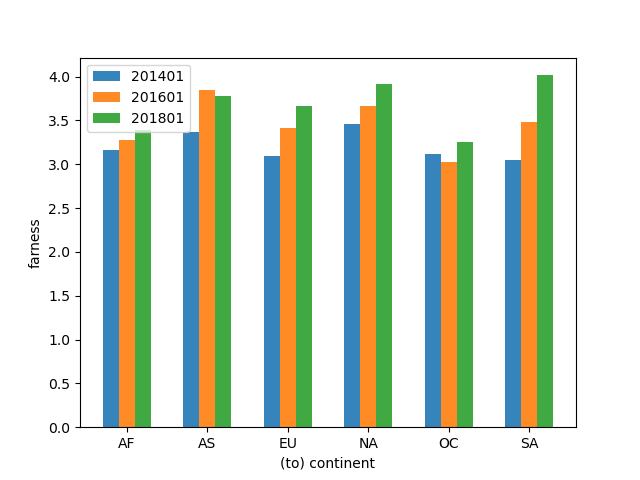
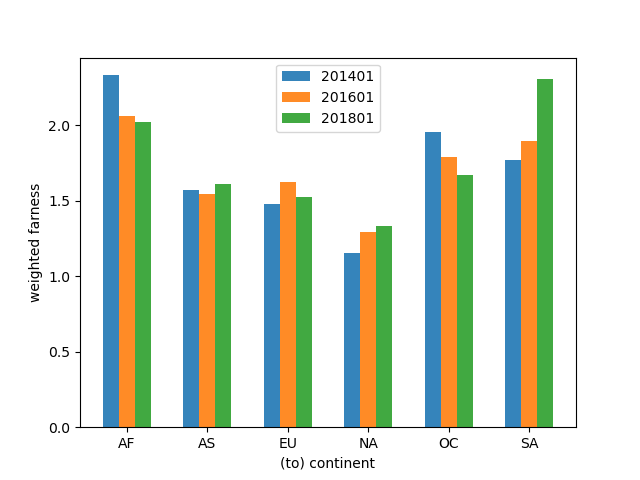
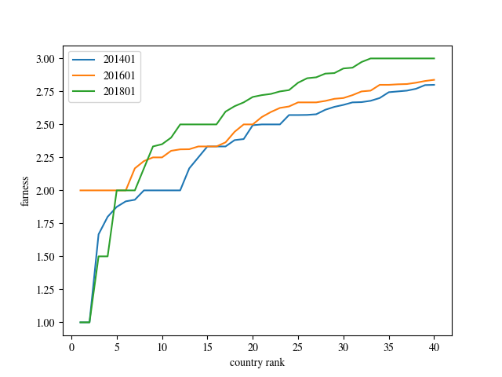
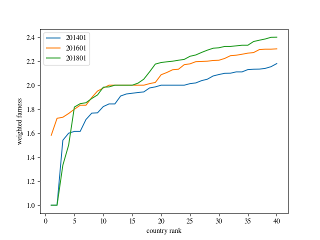
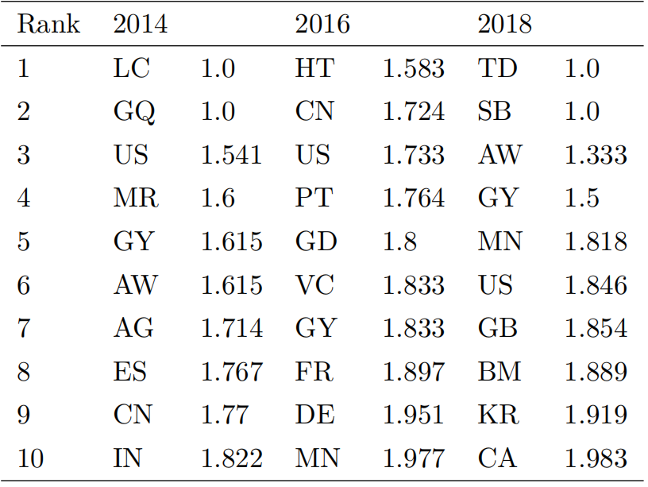

基于距离中心性的关键节点识别
在连通图中，一个节点越靠近中心，它离其他所有结点的距离越近。在逻辑分析的研究中，我们已经使用了接近中心性这一概念来衡量节点与其他节点之间的接近程度。不过接近中心性的定义缺乏实际意义，我们不妨将接近中心性的定义公式取倒数，就变成了下面的公式：
其中` | V | `代表图中的节点总数，`d(s,t)`代表从节点`s`到节点`t`之间的距离。实际上就是一个节点到其他所有节点的平均路径长度，我们称之为距离中心性。一个节点的距离中心性越大，它就越远离网络的中心。其中`d(s,t)`这一距离概念随着我们所研究的内容而变化，当我们研究国家级别的距离中心性时，这里的距离是国家级别的路径长度；当我们研究大洲级别的距离中心性时，这里的距离是洲际路径的长度。地理路径相同的IP路径可能会有多条，如果我们对于地理路径相同的IP路径只选取一条进行研究，我们称之为普通的距离中心性。如果地理相同的IP路径按照其出现的次数进行计数，则我们称之为加权的距离中心性，因为每条地理路径被按照这条路径的流量频率进行了加权。

距离中心性 |

加权距离中心性 |
上图展示了每个大洲的距离中心性。无论是否加权，北美洲都在远离网络中心。

距离中心性 |

加权距离中心性 |
上图展示了距离中心性最低的四十个国家的距离中心性。在这里我们没有考虑路径数量较少的国家以避免测量偏差带来的影响。我们可以看出距离中心性在这几年没有明显的变化。
距离中心性最低的十个国家
加权距离中心性最小的十个国家
从上表可以发现，在非加权的距离中心性较小的国家中结果比较分散，而在加权的距离中心性较小的国家中，美国在三年的统计中都出现在了排行榜中。